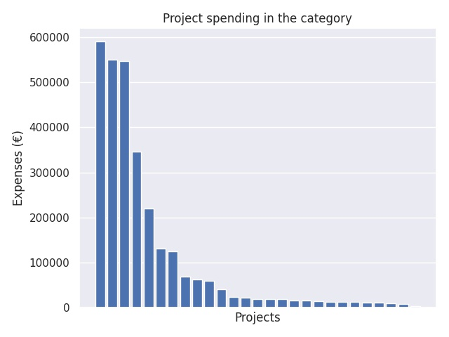

Valtionavustukset järjestöille
Category summary
110K spent on average
590K highest spending

Reports in the category
Suomi-Seura ry
Project name: Suomi-koulujen toiminta
590K spent
Förbundet Hem och Skola i Finland rf
Project name: Allmänt verksamhetsbidrag
550K spent
Suomen Vanhempainliitto ry, Finlands Föräldraförbund rf
Project name: Kodin ja päiväkodin / koulun yhteistyön kehittäminen varhaiskasvatuksessa ja koulutuksessa / järjestöille myönnettävät avustukset
546K spent
Kansanvalistusseura
Project name: Etäkoulu Kulkuri
346K spent
Kesälukioseura ry
Project name: Kesälukiotoiminta
221K spent
Suomen Ympäristökasvatuksen Seura ry
Project name: Vihreä lippu -ympäristöohjelma
132K spent
Matemaattisten Aineiden Opettajien Liitto MAOL ry
Project name: Neljän tieteen kilpailut ja tiedeolympialaiset
126K spent
Suomen lasten ja nuorten kuvataidekoulujen liitto ry
Project name: Taiteen perusopetuksen koulutus- ja tiedotustoiminta, pedagoginen ja muu kehittämistyö
69.4K spent
Kehittämiskeskus Opinkirjo ry
Project name: Peruskoulun oppilaskuntatoiminnan tukeminen ja Tutki-Kokeile-kehitä-toiminta
62.4K spent
Suomen Adventtikirkko/Koulutoimi
Project name: KouluPlus -Kristillisten koulujen kerho- ja harrastetoiminnan kehittämishanke
59.8K spent
Biologian ja maantieteen opettajien liitto BMOL ry.
Project name: Lukiolaisten kansalliset biologian ja maantieteen kokeet sekä kansainvälinen olympiatoiminta
40.5K spent
Suomi-Saksa Yhdistysten Liitto ry
Project name: Oppilasvaihto Suomi - Saksa - Suomi
23.7K spent
Oulun kristillinen kasvatus ry.
Project name: KouluPlus - kristillisten koulujen kerho- ja harrastetoiminnan kehittämishanke
22K spent
AFS Intercultural Finland ry.
Project name: Kansainvälinen vaihto-oppilasohjelma
19.8K spent
Espoon kristillisen koulun kannatusyhdistys ry
Project name: KouluPlus Espoossa – tiedettä, taidetta, toimintaa
19.3K spent
Suomen leirikouluyhdistys - Lägerskolföreningen i Finland ry
Project name: Ulos luokasta! Leirikoululähettiläs
18.8K spent
Filosofian ja elämänkatsomustiedon opettajat Feto ry
Project name: IPO Filosofiaolympialaiset (International Philosophy Olympiad)
16.2K spent
Lahden seudun kristillisen koulun kannatusyhdistys ry
Project name: KouluPlus
16K spent
Jyväskylän kristillisen koulun yhdistys ry
Project name: Kerhotoiminta kukoistamaan
15K spent
Keski-Uudenmaan kristillinen koulu
Project name: KouluPlus
13.6K spent
Kuopion kristillinen yhtenäiskoulu
Project name: Kukrin kerhohanke 2
13.3K spent
Svenska folkskolans vänner rf.
Project name: Nomadskolan
12.5K spent
Porin Kristillisen koulun kannatusyhdistys ry
Project name: KouluPlus Porissa - Kristillisten koulujen kerho- ja harrastetoiminnan kehittämishanke
11.6K spent
Lappeenrannan kristillinen kasvatus ry / Lappeenrannan kristillinen koulu
Project name: KouluPlus Lappeenranta - Kristillisten koulujen kerho- ja harrastetoiminnan kehittämishanke
10.9K spent
Confido - Pohjanmaan kristillinen kasvatus
Project name: KouluPlus Vaasa - kerho- ja harrastetoiminnan kehittäminen
10.7K spent
Agape-keskus ry / Suur-Helsingin kristillinen koulu
Project name: KouluPlus Suur-Helsingin kristillisen koulun kerhotoiminnan kehittämishanke
8.47K spent
Suomen Youth For Understanding ry
Project name: Suomalaisten vaihto-oppilaiden apurahat
4.5K spent